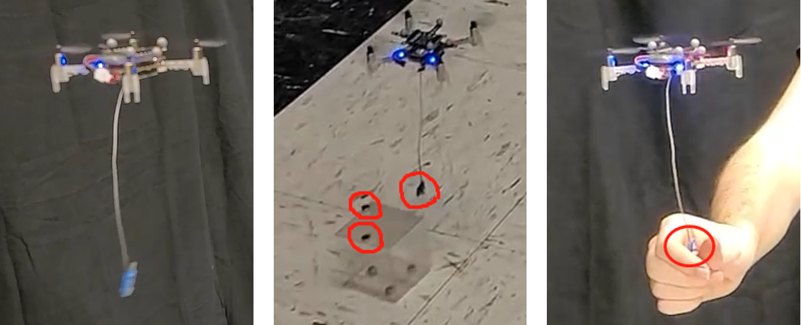
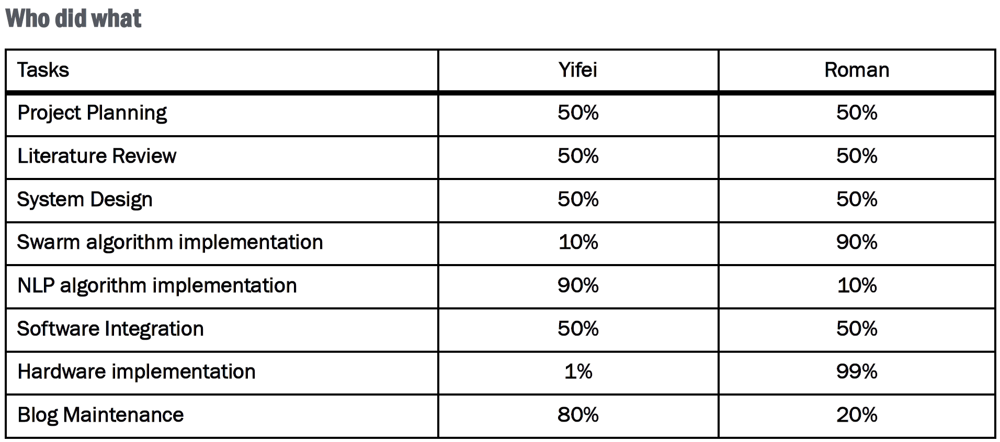

We completed all the experiments on April 26th. In this blog post, we will share our final results.
The overall architechure is shown in the image below. The system is based on Robot Operating System 2 (ROS2). As the project contains simulation of multiple robots, ROS2 is an ideal tool that supports multiple robots per ROS network and it has "Master"-less system with nodes capable of self-discovery.
Various voice commands are received from a Python script which runs NLP algorithm. Given the voice commands, the system triggers velocity commands based on consensus algorithm. The input to the algorithm is the coordinates of each individual robot. Then, the commands are sent to the controllers of the robots and the robots move to a certain point in the plane.
Screenshot: system architechureThe user's input was an audio (WAV) file. The swarm system only understood explicit functions which were pre-defined. The gap between the input and output was fulfilled using NLP technology. Figure below showed detailed steps in the NLP module. More information about the NLP module can be found in our final project (Click Here to Read).
Screenshot: NLP moduleThe commands from the NLP module will be translated into functions. Our consensus algorithm will then execute the functions and have the agents work together as one. In a simulation, we created an environment where only by working together can the problem be solved.
Screenshot: simulationIn the Webots simulation environment, we created an squared arena with four E-puck robots at the corners and one ball at the center. The objective was to move the ball out of the arena.
This task was designed for a multi-agent system because one single E-puck robot could not push the ball following a direct line. When the ball tended to leave the designated route, other E-puck robots must push it back.
We also tested our natural language based interaction system in the real environment where a nano-quadcopter delivers a remote object to a user.
 Screenshot: experiment in real worldFor this project:
- We demonstrated the possibility to build a human-swarm interaction system based on natural language commands.
- We tested the consensus algorithm and various NLP models in both the simulator and the real world.
- Within the limited schedule, we also proposed a unique method to build stable communication between Javascript and Python. (See blog #4)
We have to admit that there are still a lot of room for improvement. For example:
- Building multi-agent system in real life
- Bigger drones with quad-decks that can lift heavy ogjects
- Fine-tune the BERT model with more data
- Parse the input unit (ex: from meter to feet)
This is a team work, and we are pretty proud that Yifei and Roman collaborated very well. Below is how we distributed our tasks:
 Screenshot: Teamwork - team really worksBelow is the demo video we made to show the final results for both the simulation and the real world experiment. Roman was the main actor and Yifei was the one who said a lot of "No!!!!!!s"
In this project, we used following open-sourced software:
- Webots: https://cyberbotics.com/
- ROS2: https://docs.ros.org/en/foxy/index.html
- HuggingFace Transformer: https://huggingface.co/transformers/
- Stanza: https://stanfordnlp.github.io/stanza/
- Pytorch: https://pytorch.org/
You can download our final report via this link.
And, our final presentation slides via this longer link.
Thank you so much! Please contact us if you have any questions regarding this project.